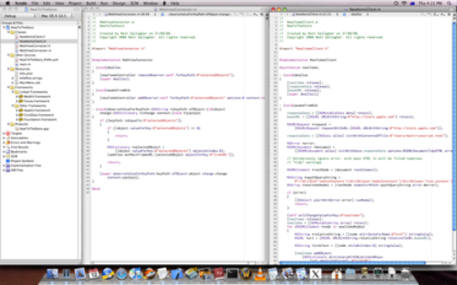

Please note: this article is part of the older "Objective-C era" on Cocoa with Love. I don't keep these articles up-to-date; please be wary of broken code or potentially out-of-date information. Read "A new era for Cocoa with Love" for more.
Scripted window management in Xcode
Xcode's placement of windows and views has never entirely satisfied me. In this post, I'll show you a series of Applescripts that I use to create my own arrangement of Xcode windows so that I can choose where different kinds of documents are placed and reorganize the layout of windows with basic key commands.
Xcode's window layout options
To show multiple files in Xcode's "Default" or "All-in-one" you need to open a second window since Xcode's project window does not support two neat column panes in the project window [edit: Yes it does. See first the first comment.]. This bothers me because I like to keep my windows tidy, so I found myself manually positioning these external windows a lot.
Furthermore, if you have positioned your main project window to look pretty when showing an 80 to 120 character width text document, opening a fundamentally different kind of document in the window (like a Core Data .xcdatamodel) requires that you resize the project window to view the new document properly and resize back again when done.
I could use the "Condensed" layout that Xcode provides which puts everything in a separate window by default — but this doesn't solve the "manual repositioning" problem and puts extra columns into the tree-view of the project window which I find cluttering and unnecessary.
Choose your own layout
In an effort to address all the things I dislike about Xcode's default layouts, I decided to create a series of Applescripts that would position windows where I want them and could do so based on the type of window (source document, Find results, Build results, Core Data .xcdatamodel, etc). The result is a "virtual" all-in-one window where the panes are positioned according to my choices and I can shift documents from the left-column to the right column or to fullscreen with a basic key command.
Here's a screenshot of my layout showing two edit windows in columns and the project window on the left:
I clearly use a minimalist layout but the approach I will present could be used to put find and build results at the top of one column and reserve the second column for the debugger and console.
The Xcode layout required is the "Default" layout but I collapse the Project window down to just the tree-view by double-clicking the "double-vertical-bar-and-arrow" icon at the right of the tree-view header.
Keyboard shortcuts and working without the toolbar
The only two toolbar items I use are the "Build Configuration" and "Active SDK" popup menus. I use the standard set in the Debug Window but for building I consider it a waste of time. There are only a few keyboard shortcuts you need for Xcode and you really should know them:
- ⌘Y — Build and Debug. This should be your most-used key command.
- ⌘⇧D — Open a file by name. Much faster than using the Project Tree for large projects.
- ⌘⇧Y — Show the Debug Window.
- ⌘⇧F — Show the Find Window.
- ⌘⇧R — Show the Run Console.
- ⌘+option+W — Close all windows of the current type (fast way to close all source windows)
- F10 (or Control + Dashboard button on new keyboards) — Show the current app's windows.
To this collection of keyboard shortcuts, I'll add the following:
- ⌘1 —Position the front-most window in the first column.
- ⌘2 —Position the front-most window in the second column.
- ⌘3 —Position the front-most window filling the first and second columns.
- ⌘4 —Reposition all windows based on type.
The positioning scripts
The following is the Xcode user script for positioning the front-most window in the first column:
#! /usr/bin/osascript
set screenWidth to 1680
set screenHeight to 1050
set dockBottomPadding to 73
set dockLeftPadding to 0
set dockRightPadding to 0
set projectWindowWidth to 300
set menubarHeight to 22
set docWidth to (screenWidth - dockLeftPadding - dockRightPadding - projectWindowWidth) / 2
set leftDocBounds to {dockLeftPadding + projectWindowWidth, dockBottomPadding, screenWidth - dockRightPadding - docWidth - 1, screenHeight - menubarHeight}
tell application "Xcode"
set bounds of item 1 of windows to leftDocBounds
end tellTo make this work, add it to your Xcode User Scripts as Input=No Input, Directory=Selection, Output=Discard Output, Error=Display in Alert. I then set the shortcut to ⌘1. If you've never added an Xcode User Script before, I explain the process more thoroughly in an earlier post.
Since it is difficult to get the actual screen size using Applescript (see John Gruber's pain in trying) I've hardcoded my screen size into the script. Change the width and height if your screen is a different size and change the dock padding values if your dock is a different height or placement.
This much is fairly simple. Much more interesting is the "reposition everything" script:
Update 2009-10-19: changed to split strings using a specified delimiter so the extension is extracted consistently (not affected by locale settings).
#! /usr/bin/osascript
set screenWidth to 1680
set screenHeight to 1050
set dockBottomPadding to 73
set dockLeftPadding to 0
set dockRightPadding to 0
set projectWindowWidth to 300
set menubarHeight to 22
set docWidth to (screenWidth - dockLeftPadding - dockRightPadding - projectWindowWidth) / 2
set projectBounds to {dockLeftPadding, dockBottomPadding, projectWindowWidth + dockLeftPadding - 1, screenHeight - menubarHeight}
set leftDocBounds to {dockLeftPadding + projectWindowWidth, dockBottomPadding, screenWidth - dockRightPadding - docWidth - 1, screenHeight - menubarHeight}
set rightDocBounds to {screenWidth - dockRightPadding - docWidth, dockBottomPadding, screenWidth - dockRightPadding - 1, screenHeight - menubarHeight}
set fullDocBounds to {dockLeftPadding + projectWindowWidth, dockBottomPadding, screenWidth - dockRightPadding - 1, screenHeight - menubarHeight}
-- save delimiters to restore old settings
set oldDelimiters to AppleScript's text item delimiters
-- set delimiters to delimiter to be used
set AppleScript's text item delimiters to {".", " - "}
tell application "Xcode"
set leftHalfScreenSuffixes to {"m", "c", "h", "mm", "cpp"}
set rightHalfScreenSuffixes to {"Results", "Find", "Console"}
set fullScreenSuffixes to {"xcdatamodel", "Debugger"}
set processedWindows to {}
repeat with doc in documents
set docName to name of doc
if (length of docName) is greater than 10 then
set docNameMinusExtension to text 1 thru ((length of docName) - 10) of docName
else
set docNameMinusExtension to ""
end if
repeat with win in windows of doc
set n to name of win
try -- wrap in a try in case the window name is undefined
set end of processedWindows to name of win
if n is equal to docNameMinusExtension then
set bounds of win to projectBounds
else
set extension to last item in text items of n
if extension is in leftHalfScreenSuffixes then
set bounds of win to leftDocBounds
else if extension is in rightHalfScreenSuffixes then
set bounds of win to rightDocBounds
else if extension is in fullScreenSuffixes then
set bounds of win to fullDocBounds
end if
end if
end try
end repeat
end repeat
repeat with win in windows
if not (processedWindows contains name of win) then
set n to name of win
try -- wrap in a try in case the window name is undefined
set extension to last item in text items of n
log extension
if extension is in leftHalfScreenSuffixes then
set bounds of win to leftDocBounds
else if extension is in rightHalfScreenSuffixes then
set bounds of win to rightDocBounds
else if extension is in fullScreenSuffixes then
set bounds of win to fullDocBounds
end if
end try
end if
end repeat
end tell
set AppleScript's text item delimiters to oldDelimitersThis script iterates over the windows for each document, then over all windows not attached to a document to reach every window that Xcode has open. It then uses the window's title to decide where to place each window. Source code files are placed in the first column, results windows are placed in the second column and the Debugger is made dual column. This script also positions the Project window.
The "position in the second column" and "position filling first and second columns" scripts are just like the first script but with rightDocBounds and fullDocBounds from the second script respectively.
Conclusion
A few scripts to reposition your windows and connected to the shortcuts ⌘1 to ⌘4 is not a revolutionary idea but I don't think I was alone among Xcode programmers in continuously repositioning my windows as I opened and shut new documents and switched from debugging to editing to build results and back.
These scripts only save a few seconds at a time but they make Xcode feel much more magical as windows jump to exactly where I want them to be.
I doubt everyone will want to position their windows exactly as I have but these scripts should be easily adaptable to a range of different layouts — just tweak the calculated bounds and the sets of Window suffixes that are placed at each bounds.
An Asteroids-style game in CoreAnimation, Part Four.